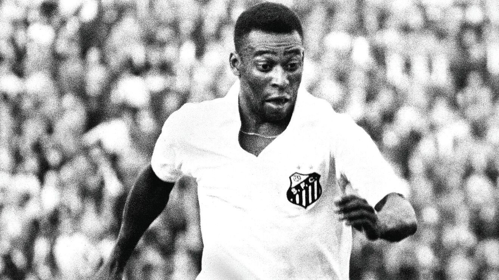
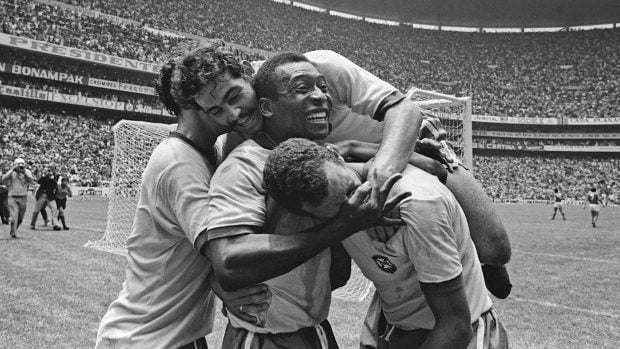
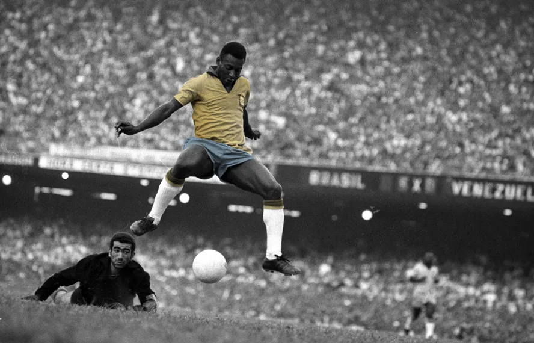
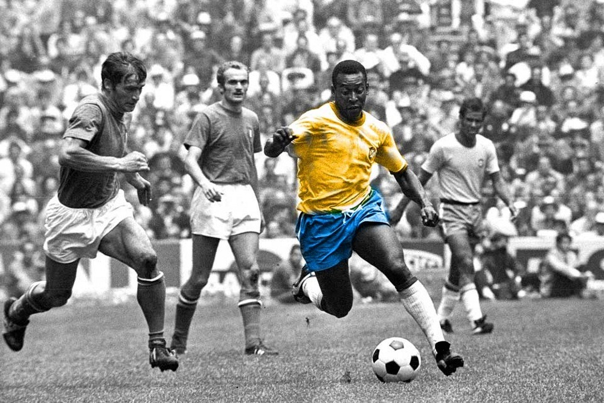
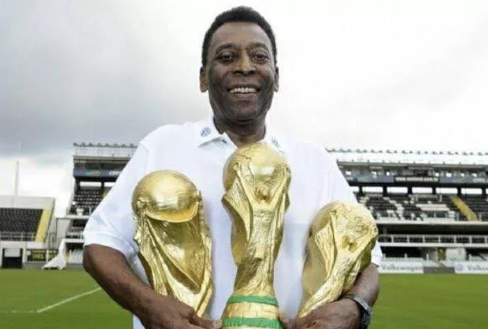
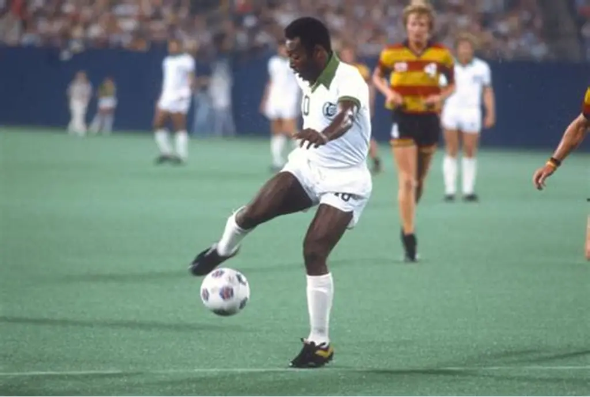
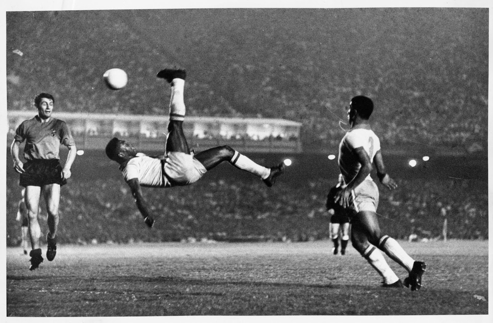
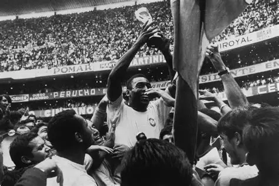
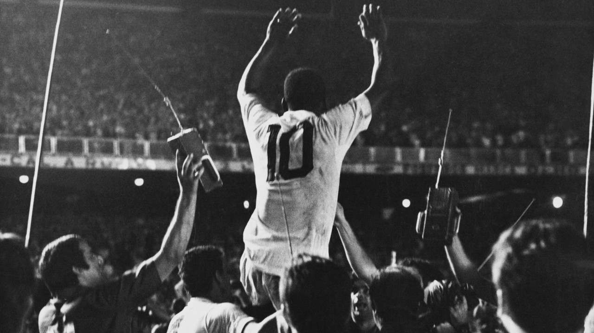
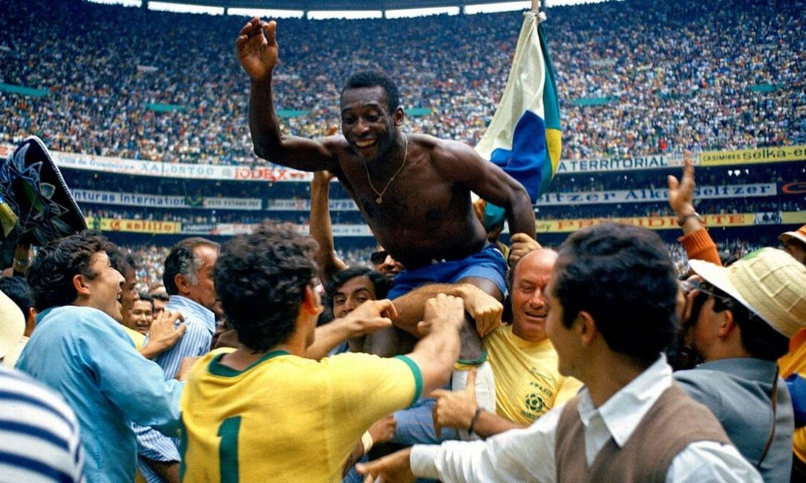

.png)
A História do Rei
Sua carreira profissional começou muito cedo, aos 15 anos, quando foi contratado pelo Santos Futebol Clube. No ano seguinte, já integrava a seleção brasileira principal. Com apenas 17 anos, Pelé conquistou o mundo ao vencer a Copa do Mundo de 1958, na Suécia. Naquele torneio, encantou o planeta com sua habilidade, velocidade, inteligência e capacidade de decisão, marcando gols decisivos, inclusive na final contra a Suécia.
Pelé participou de quatro Copas do Mundo (1958, 1962, 1966 e 1970), sendo campeão em três delas (1958, 1962 e 1970), um feito único na história do futebol. Em 1970, no México, liderou uma das seleções mais icônicas de todos os tempos, considerada por muitos a melhor equipe da história, ao lado de grandes jogadores como Jairzinho, Tostão e Rivelino. Sua atuação nesse torneio consolidou sua imagem como o maior jogador de futebol do mundo.
No Santos, Pelé construiu uma carreira lendária. Durante quase duas décadas no clube, conquistou inúmeros títulos, incluindo a Copa Libertadores e o Mundial Interclubes em 1962 e 1963. Ele marcou mais de mil gols ao longo de sua carreira — um número simbólico que reforçou sua reputação como um dos maiores artilheiros da história do esporte.
Além de seu talento dentro de campo, Pelé também teve um impacto enorme fora dele. Ele ajudou a popularizar o futebol globalmente, tornando-se um embaixador do esporte e um símbolo do Brasil. Sua imagem ultrapassou o futebol, sendo reconhecido mundialmente como um ícone cultural e esportivo.
Nos anos finais de sua carreira, Pelé jogou pelo New York Cosmos, nos Estados Unidos, contribuindo para o crescimento do futebol no país. Ele se aposentou oficialmente em 1977, deixando um legado incomparável.
Ao longo de sua vida esportiva, Pelé não foi apenas um jogador excepcional, mas também um símbolo de excelência, disciplina e paixão pelo futebol. Sua história é marcada por superação, talento e conquistas que atravessaram gerações, consolidando-o como uma das maiores lendas do esporte mundial.
Galeria de Fotos

Pelé em ação pelo Santos

Copa do Mundo 1958 — Suécia

Copa do Mundo 1970 — México

A alegria do Rei

Tricampeão mundial

New York Cosmos — EUA
Lances Históricos

O Gol de Bicicleta
Um dos gols mais bonitos da história, marcado com maestria e elegância incomparáveis.

Final da Copa 1958
Com 17 anos, marcou dois gols na final contra a Suécia e chorou ao conquistar o título.

O Milésimo Gol
Em 19 de novembro de 1969, no Maracanã, Pelé marcou seu milésimo gol de pênalti pelo Santos.

Copa 1970 — O Melhor do Mundo
Liderou a seleção considerada a melhor de todos os tempos ao tricampeonato no México.
Vídeos
Os melhores gols de Pelé
Pelé na final da Copa de 1970
O milésimo gol